7.1. Control Using a DUALSHOCK®#
The HSR can be operated using a DUALSHOCK®3 or DUALSHOCK®4 controller. This section explains how to operate the HSR with the controller.
7.1.1. DUALSHOCK®3 Connection#
The DUALSHOCK®3 supports wired and wireless connections.
7.1.1.1. Switching to DUALSHOCK®3#
You can switch to a DUALSHOCK®3 using the following procedure.
If the simulator is running, press “Ctrl”+”C” to stop the simulator.
Run the following to set the environment variable.
$ export USE_DUALSHOCK4=false
Launch the simulator for the appropriate environment as needed.
7.1.1.2. Wired Connection#
This section explains the wired connection and disconnection procedures.
7.1.1.2.1. Connection#
Connect the DUALSHOCK®3 controller to a USB port on the development PC.
After connecting the DUALSHOCK®3 controller to the USB port, press the “PS” button shown in the figure below.
{kind=link}
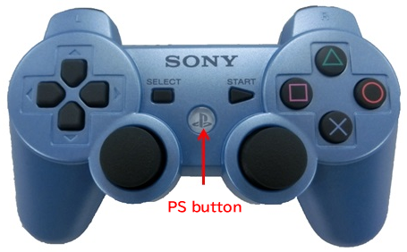
7.1.1.2.2. Disconnection#
To disconnect, unplug the DUALSHOCK®3 USB cable from the USB port. If the red indicator at the top of the DUALSHOCK®3 turns off, you can confirm that it has been disconnected.
7.1.1.3. Wireless Connection#
This section explains the preparation required for wireless connection, as well as the procedures for wireless connection and disconnection.
7.1.1.3.1. Preparation#
Configuration Performed Only on First Use
Run the following to install the required packages.
$ sudo apt update $ sudo apt install -y bluetooth bluez bluez-tools
On the development PC or the HSR internal PC, set
ClassicBondedOnlyin/etc/bluetooth/input.conftofalse.ClassicBondedOnly=false
Checks Performed at Each Startup
If Bluetooth is disabled on the development PC or the HSR internal PC, wireless connection is not possible, so you must check the Bluetooth status each time the system is restarted. This section explains how to check the status and enable Bluetooth.
Status check
Run the following to check the Bluetooth status.
$ rfkill list 0: hci0: Bluetooth Soft blocked: no Hard blocked: no
If both
Soft blockedandHard blockedare “no”, Bluetooth is enabled. If either of them is “yes”, Bluetooth is disabled, so perform the following procedure to enable it.Enabling Bluetooth
Run the following to enable and restart Bluetooth.
$ sudo rfkill unblock bluetooth $ sudo systemctl restart bluetooth
Run the following to check the Bluetooth status.
$ rfkill list
If Bluetooth still does not start properly and either Soft blocked or Hard blocked is “yes”, run the following.
$ sudo hciconfig hci0 up piscan $ sudo hciconfig hci0
If you can confirm that
UPis displayed, Bluetooth has started successfully.
7.1.1.3.2. Connection#
Run the following to launch
bluetoothctl.$ bluetoothctlWhen bluetoothctl is launched, a console like the following is displayed. Enter commands in this console to operate Bluetooth.
[bluetooth]#
To exit, press “Ctrl”+”D”.
Run the following to enable Bluetooth.
[bluetooth]# agent on [bluetooth]# default-agent [bluetooth]# power on
connect the DUALSHOCK®3 controller to a USB port on the development PC.
When a
Yes/Noconfirmation message is displayed inbluetoothctl, enterYes.After unplugging the DUALSHOCK®3 USB cable from the USB port, press the “PS” button and confirm that one red indicator on the DUALSHOCK®3 lights up. If the red indicator is lit, the connection has been established successfully.
7.1.1.3.3. Disconnection#
When disconnecting, perform one of the following actions.
Press and hold the “PS” button on the DUALSHOCK®3 controller for about 10 seconds.
In
bluetoothctl, run the following.[bluetooth]# disconnect
Alternatively, run the following without entering
bluetoothctl.$ bluetoothctl disconnect
If the red indicator at the top of the DUALSHOCK®3 turns off, you can confirm that it has been disconnected.
7.1.2. DUALSHOCK®4 Connection#
The DUALSHOCK®4 supports both wired and wireless connections.
7.1.2.1. Switching to DUALSHOCK®4#
You can switch to a DUALSHOCK®4 using the following procedure.
If the simulator is running, press “Ctrl”+”C” to stop the simulator.
Run the following to set the environment variable.
$ export USE_DUALSHOCK4=true
Launch the simulator for the appropriate environment as needed.
7.1.2.2. Wired Connection#
This section explains the wired connection and disconnection procedures.
7.1.2.2.1. Connection#
Connect the DUALSHOCK®4 controller to a USB port on the development PC.
After connecting the DUALSHOCK®4 controller to the USB port, press the “PS” button shown in the figure below.

7.1.2.2.2. Disconnection#
To disconnect, unplug the DUALSHOCK®4 USB cable from the USB port. If the light bar at the top of the DUALSHOCK®4 turns off, you can confirm that it has been disconnected.
7.1.2.3. Wireless Connection#
This section explains the preparation required for wireless connection, as well as the procedures for wireless connection and disconnection.
7.1.2.3.1. Preparation#
Refer to Preparation in “DUALSHOCK®3 Connection” and prepare Bluetooth accordingly.
7.1.2.3.2. Connection#
Unlike the DUALSHOCK®3, the DUALSHOCK®4 can store pairing information once the initial configuration has been performed, making it easy to establish a wireless connection.
In the following procedure, you will first perform the initial connection configuration.
Initial Connection Configuration (Pairing)
Run the following to launch
bluetoothctl.$ bluetoothctlWhen bluetoothctl is launched, a console like the following is displayed. Enter commands in this console to operate Bluetooth.
[bluetooth]#
To exit, press “Ctrl”+”D”.
Run the following to enable Bluetooth.
[bluetooth]# agent on [bluetooth]# default-agent [bluetooth]# power on
Press the “SHARE” button and the “PS” button on the DUALSHOCK®4 controller at the same time, and confirm that the light bar at the top of the DUALSHOCK®4 repeatedly flashes white twice in succession.
In
bluetoothctl, run the following and confirm the device name (Wireless Controller) of the DUALSHOCK®4 controller.[bluetooth]# scan on
When the device name of the DUALSHOCK®4 controller is displayed, run the following.
[bluetooth]# scan off
Run the following and confirm the address of the DUALSHOCK®4 controller. In the following example, the address is
A4:AE:11:20:39:F1.[bluetooth]# devices Device A4:AE:11:20:39:F1 Wireless Controller
Run the following to perform pairing. Enter the address of the DUALSHOCK®4 controller for
<Address>.[bluetooth]# pair <Address>
When a
Yes/Noconfirmation message is displayed inbluetoothctl, enterYes. If the light bar at the top of the DUALSHOCK®4 controller turns blue, the connection has been established successfully.Run the following so that the controller can connect automatically at the next launch. Enter the address you specified above for
<Address>.[bluetooth]# trust <Address>
Subsequent Connections
Run the following to enable Bluetooth.
$ bluetoothctl power on
Press the “PS” button on the DUALSHOCK®4 controller. If the light bar at the top of the DUALSHOCK®4 turns blue, the connection has been established successfully.
7.1.2.3.3. Disconnection#
Refer to Disconnection in “DUALSHOCK®3 Connection” and disconnect the connection. Note that for the DUALSHOCK®4, you can confirm disconnection when the light bar at the top of the DUALSHOCK®4 turns off.
7.1.3. How to Use#
7.1.3.1. Control overview#
{kind=link}
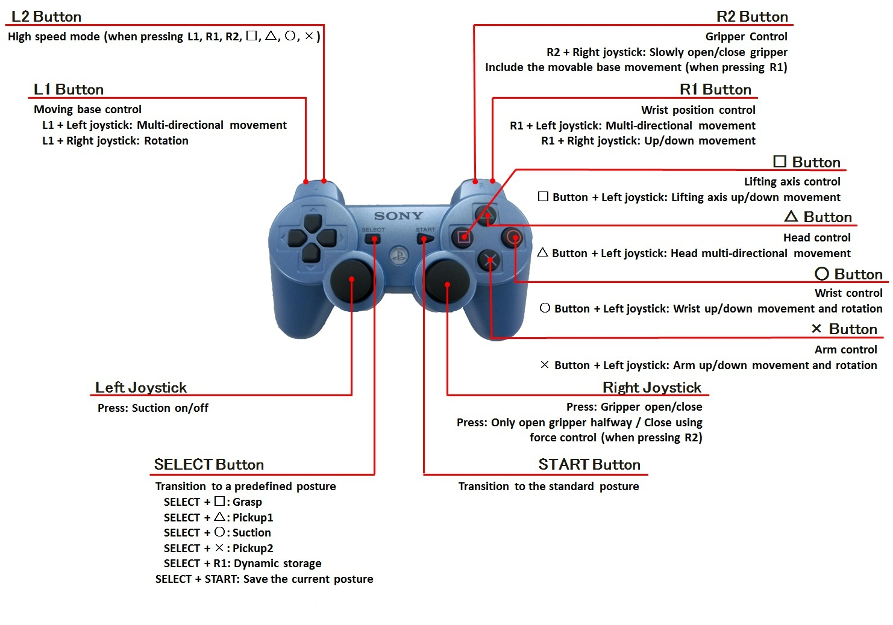
DUALSHOCK@3#
{kind=link}
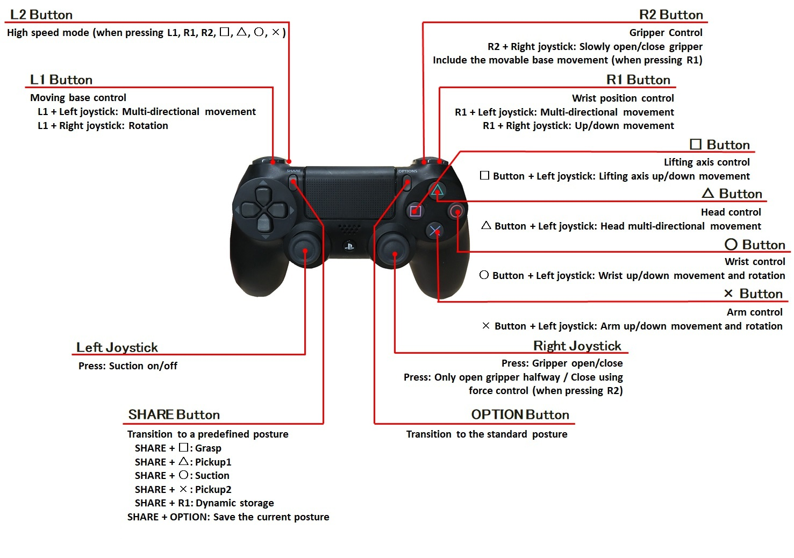
DUALSHOCK@4#
Basically, the operation is controlled by pushing a “Control button” while pressing an “Enable button”.
In the following illustrations, the left side are the “Enable buttons” and the right side are the “Control buttons”.
7.1.3.2. Control without optional buttons#
Standard posture transitions, gripper opening and closing, and suction control are always available without pressing the “Enable button”.
{kind=link}
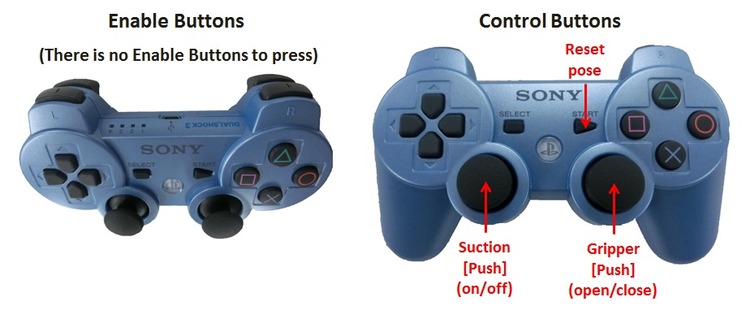

- Reset pose:
Allow the robot to transition to its standard posture where the gripper faces forward. If it becomes hard to control the posture of the robot, it is recommended that the robot transition to the standard posture once again.
{kind=link}
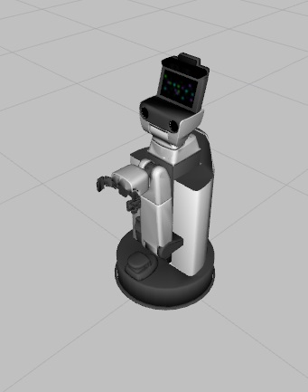
- Gripper:
Perform gripper open and close.
7.1.3.3. Control while pressing “SELECT/SHARE”#
7.1.3.3.1. Default posture transitions#
Allow the robot to transition to a default posture.

{kind=link}
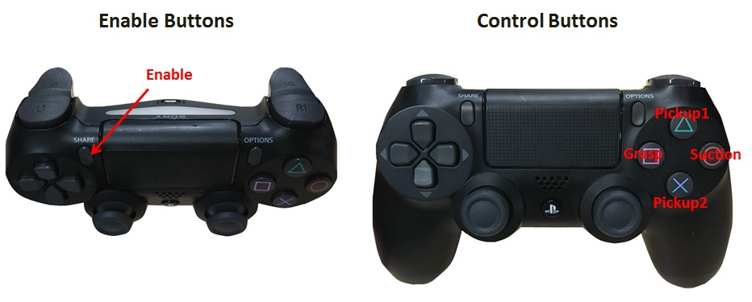
- Pickup1:
To pick up something from the side it transitions to a suitable posture. A posture necessary for grasping can be achieved using the lifting axis and wrist roll axis. Furthermore, with this posture, even if the lifting axis is lowered to its lowest point, when the gripper is closed it will transition to the posture that does not hit the ground.

- Pickup2:
To pick up something from above it transitions to a suitable posture. A posture necessary for grasping can be achieved using the lifting axis and wrist roll axis. Furthermore, because of the state of this posture, even if the lifting axis is lowered to its lowest point, when the gripper is closed it will transition to the posture that does not hit the ground.
{kind=link}
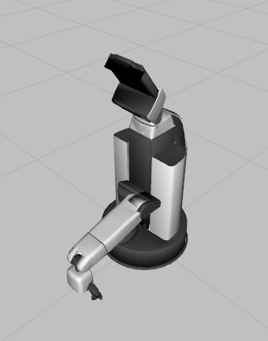
- Suction:
It transitions its posture to use suction to pick up cards and such. With the gripper remaining open, please allow the robot to transition to this posture.

- Grasp:
To grasp an object in front of the robot, transition to a suitable posture. You can control the posture required for gripping by using the lifting axis and the wrist roll axis.

7.1.3.3.2. Dynamic posture storage and transition#
Dynamically store postures and transition to saved postures.


- Save Pose:
Save the robot’s current posture.
- Dynamic storage:
Transition to a saved posture. If the posture is not saved, then transition to a standard posture.
7.1.3.4. Control while pressing “L1”#
7.1.3.4.1. Base control#
Perform base control. When pressing only “L1”, it moves at normal speed. when pressing “L2” while pressing “L1” as pressing “L2” causes the movement speed to become fast.
{kind=link}
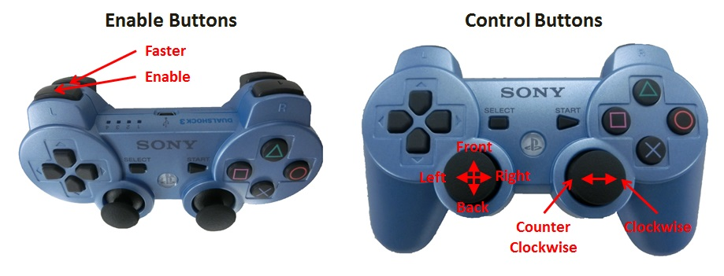

- Front:
Move forward.
- Back:
Move backwards.
- Right:
Move to the right.
- Left:
Move to the left.
- Clockwise:
Rotate clockwise.
- Counter Clockwise:
Rotate counterclockwise.
7.1.3.5. Control while pressing “△”#
7.1.3.5.1. Head control#
Perform head control. When pressing only “△”, the head moves at normal speed. when pressing “L2” while pressing “△” as pressing “L2” causes the movement speed to become fast.
{kind=link}
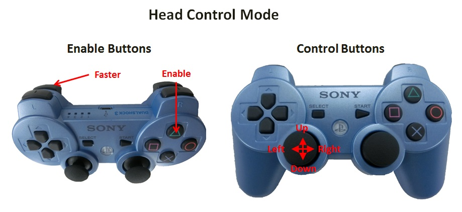
{kind=link}
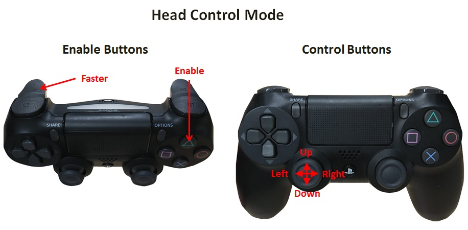
- Up:
Turn the head up.
- Down:
Turn the head down.
- Right:
Turn the head to the right.
- Left:
Turn the head to the left.
7.1.3.6. Control while pressing “□”#
7.1.3.6.1. Lifting axis control#
Perform lifting axis control. When pressing only “□”, the lifting axis moves at normal speed. when pressing “L2” while pressing “□” as pressing “L2” causes the movement speed to become fast.


- Up:
Raise the lifting axis.
- Down:
Lower the lifting axis.
7.1.3.7. Control while pressing “○”#
7.1.3.7.1. Wrist control#
Perform wrist control. When pressing only “○”, the wrist moves at normal speed. when pressing “L2” while pressing “○” as pressing “L2” causes the movement speed to become fast.
{kind=link}
{kind=link}
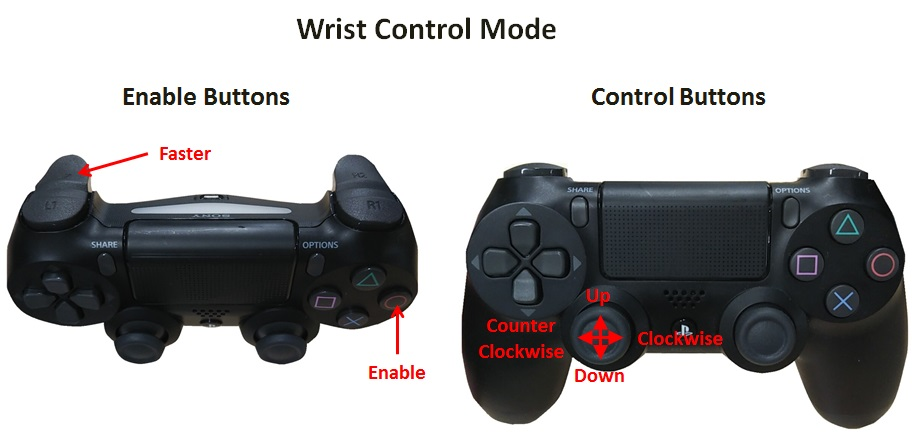
- Up:
Tilt the wrist up.
- Down:
Tilt the wrist down.
- Clockwise:
Turn the wrist clockwise.
- Counter Clockwise:
Turn the wrist counterclockwise.
7.1.3.8. Control while pressing “×”#
7.1.3.8.1. Arm control#
Perform arm control. When pressing only “×”, the arm moves at normal speed. when pressing “L2” while pressing “×” as pressing “L2” causes the movement speed to become fast.
{kind=link}
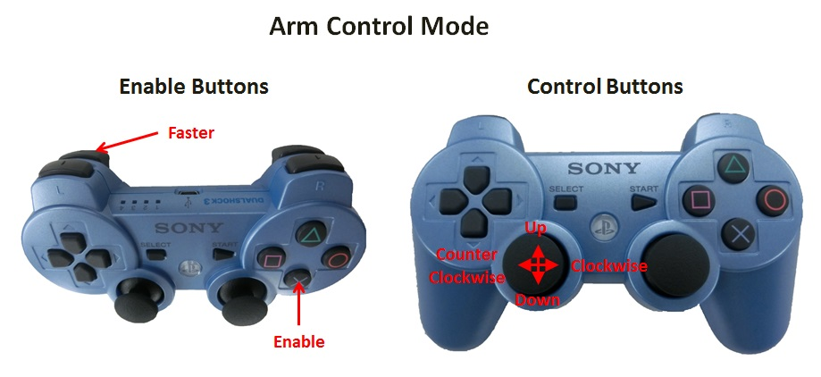
{kind=link}
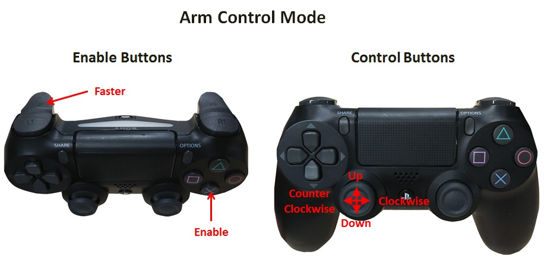
- Up:
Tilt the arm up.
- Down:
Tilt the arm down.
- Clockwise:
Turn the arm clockwise
- Counter clockwise:
Turn the arm counterclockwise.
7.1.3.9. Control while pressing “R1”#
7.1.3.9.1. Hand position control#
Perform hand position control. If the movable range of the hand is surpassed, then it will stop without working.
When pressing only “R1”, the base performs hand position control while the base remains still. When pressing “R2” while pressing “R1”, the hand moves along with the base. Although the hand movement range will widens, as the base may move.

{kind=link}
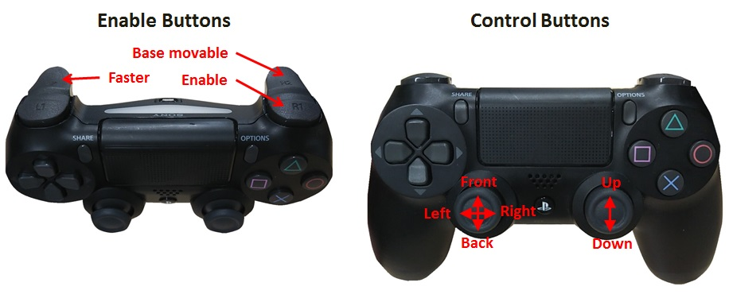
- Front:
Move forward.
- Back:
Move backwards.
- Right:
Move to the right.
- Left:
Move to the left.
- Up:
Move up.
- Down:
Move down.
7.1.3.10. Control while pressing “R2”#
7.1.3.10.1. Gripper control#
Perform gripper control. When pressing only “R2”, the gripper moves at normal speed. when pressing “L2” while pressing “R2” as pressing “L2” causes the movement speed to become fast.
Fast mode is available only for “Gripper open/close”.
{kind=link}
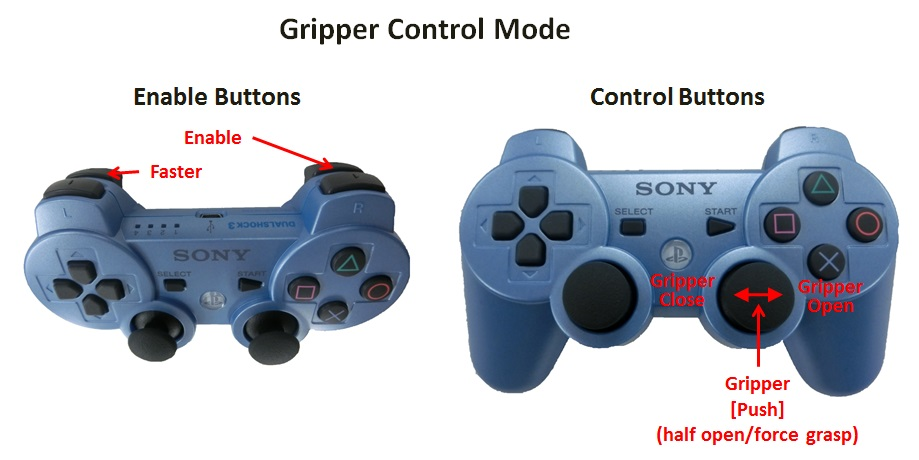
{kind=link}
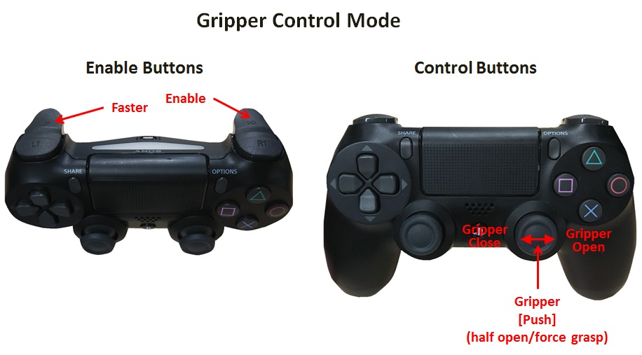
- Gripper open:
Slowly open the gripper.
- Gripper close:
Slowly close the gripper.
- Half Open:
Only open the gripper half way.
- Force grasp:
Close the gripper with force control.